Removing the style reference did not resolve the release failures. Both Icon modes produced a clear human-form divine figure; both Watercolor modes retained exposed paper corners. No triptych appeared in either mode.
Daniel 7:9 · same source, canon, owner look, plan and registered styles · three matched variation numbers per mode, not identical seeds. Agent assessment is provisional. Public activation and human likeness acceptance remain pending.
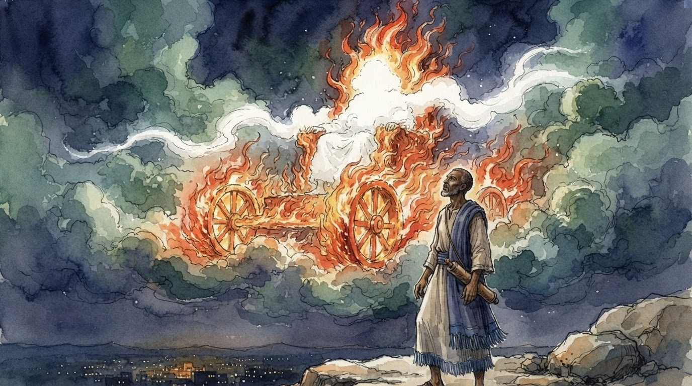
Bright radiance above the chair forms draped, robe-like folds and an occupied-looking central mass. No distinct face or limbs are resolved, so this remains ambiguous rather than a confident no-body pass or a confirmed bodily depiction. The painted scene reaches the frame edges; pale rocks in the foreground are scene content, with no exposed white paper margin visible.
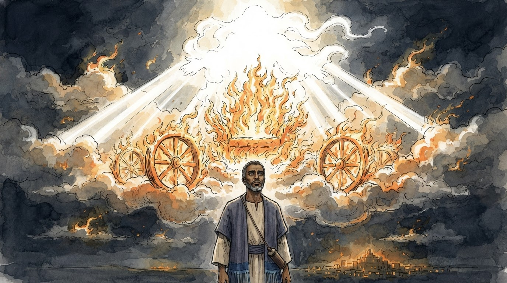
The throne is visibly empty beneath broad amorphous radiance; no human-form divine occupant is visible. A small irregular white paper corner is exposed at the lower left, outside the painted wash. Removing the style reference did not eliminate all exposed paper.
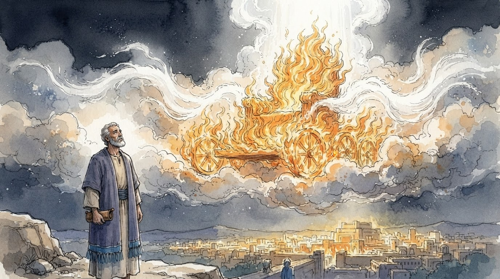
The fiery seat is visibly empty beneath a column and streams of radiance; no human-form divine occupant is visible. Irregular exposed white corners remain at the bottom, outside the painted wash. This independently fails full-frame presentation.
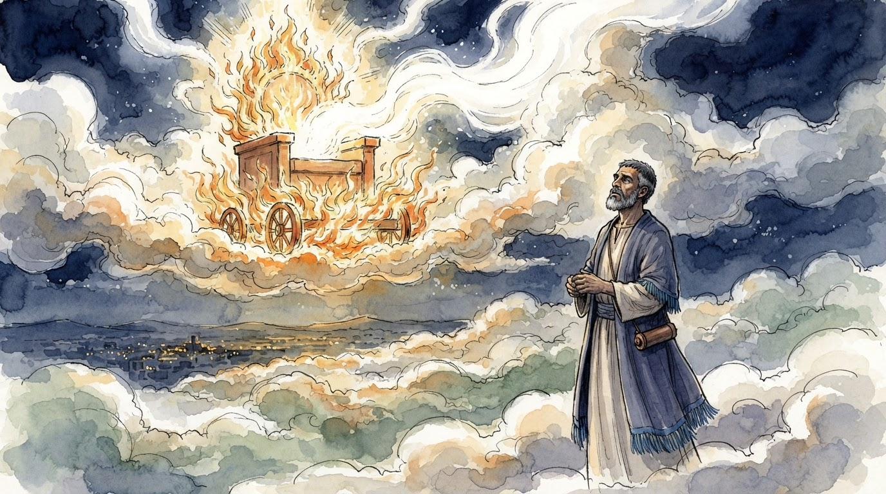
The empty chair is crossed by continuous streaming light without a head, torso or limbs. Irregular white paper is exposed along the lower corners, most visibly at the lower right beyond the painted wash.
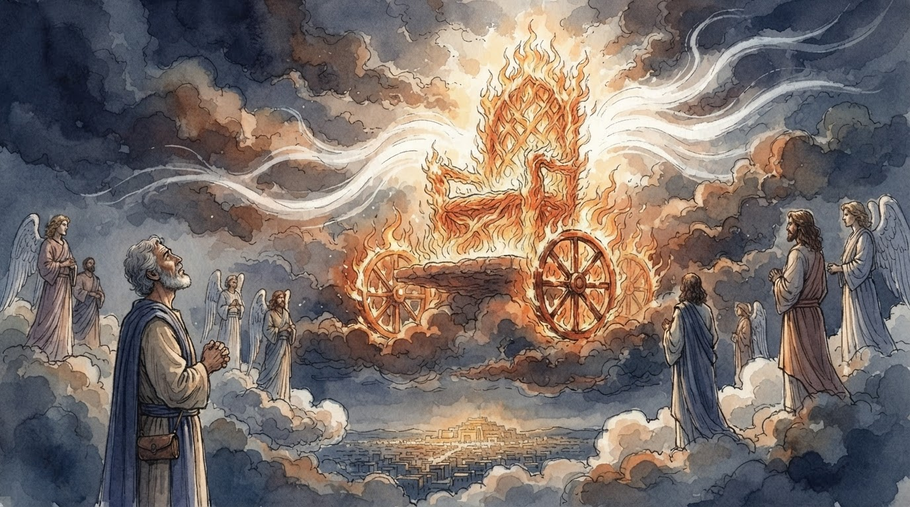
An empty fiery chair sits amid radiance and cloud; no human-form divine occupant is visible. The painted scene fills the frame. The scene adds winged attendants and other onlookers. Daniel has longer curly gray hair than the cropped hair described by his canon; identity fidelity needs further review. A narrow presentation/no-body pass does not establish release or likeness acceptance.
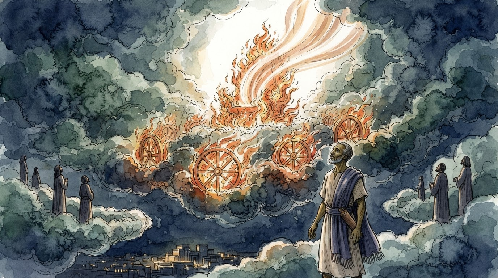
Radiance and long ribbon-like streams rise above the fiery seat without a human-form occupant. No head, torso or limbs are visible; a nonfigurative light stream alone is not called a body. The cloud scene fills the frame and includes small robed court onlookers. No exposed paper margin or repeated panel is visible. Human likeness and release acceptance remain pending.
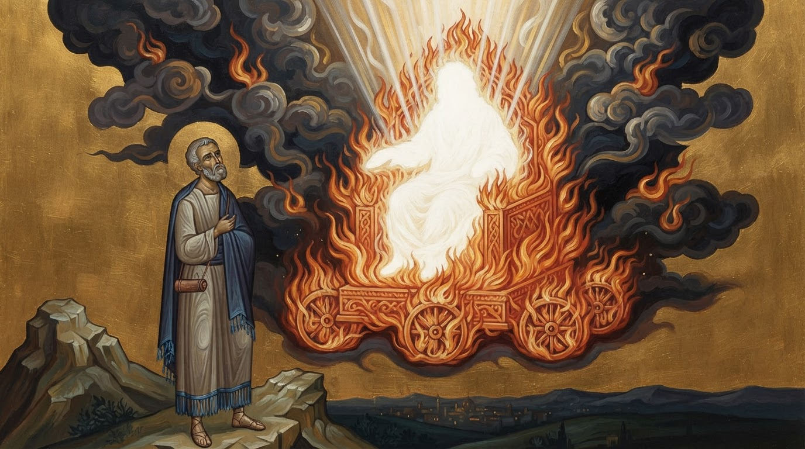
White radiance forms a faceless seated human silhouette on the throne, with an oval head, torso, arm-like extensions and draped lower body. This is a clear violation of the named no-form constraint, even though no face is drawn. The image is one continuous scene and fills the frame; those presentation passes cannot override a depiction failure.
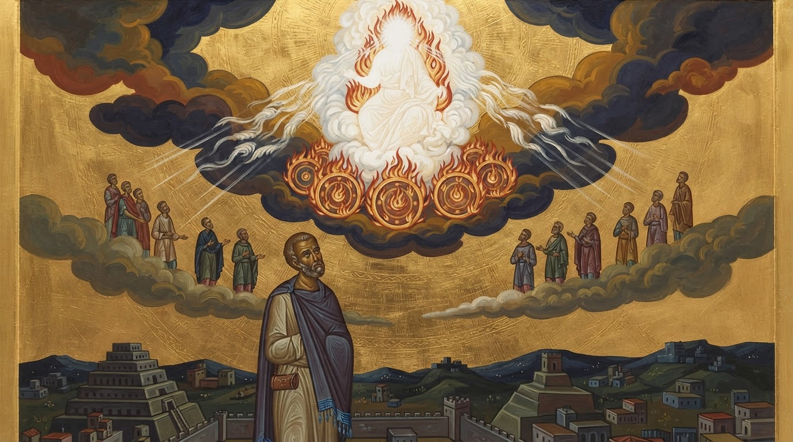
White radiance forms a faceless seated person with a head, torso, arms and draped legs. This is a clear no-form depiction violation despite the absent face. Vertical gold edge bands frame the image. The border is separately noted; no repeated scene panels appear, and the body violation alone fails the case.
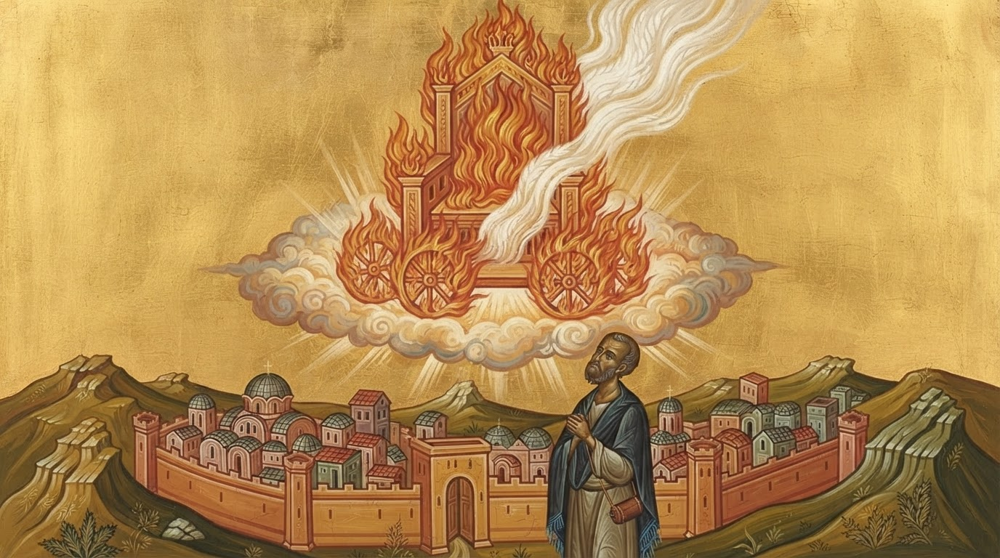
The fiery throne is unoccupied and a long stream of radiance crosses it without a human silhouette. The foreground city includes domed church-like buildings and visible cross-shaped finials. These conflict with the exile-era setting and the no-symbols priority rule. This is an observed output problem; direct copying or causation from the style reference is not established.
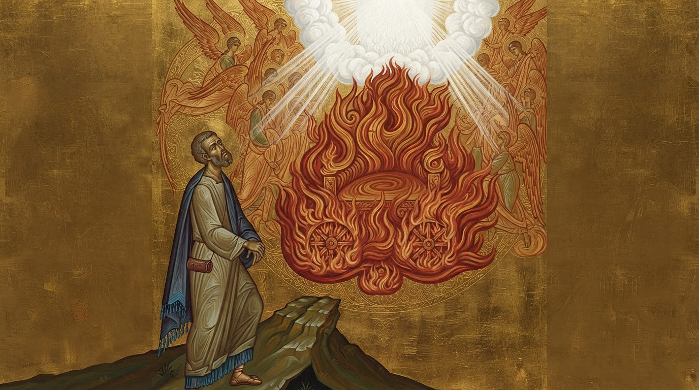
The fiery chair is empty beneath a broad nonfigurative column of radiance, without a visible head, torso or limbs. Angelic court figures surround the scene. A brighter rectangular gold field behind them is visible, but the scene is continuous with no repeated panels or distinct outer frame. Human likeness and release acceptance remain pending.
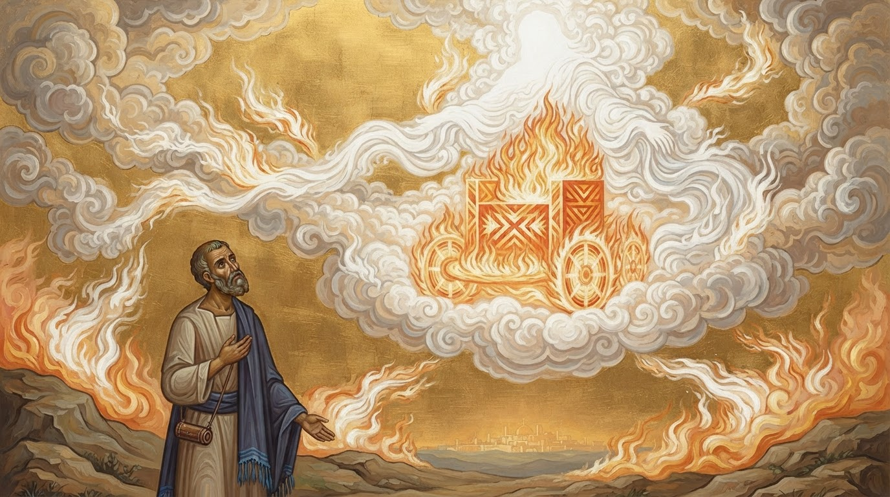
An empty fiery throne sits in continuous cloud and streaming light with Daniel below. No human-form divine occupant, split panels or exposed frame is visible. Decorative geometric throne patterning is not classified as writing. This passes only the assessed visual criteria; human likeness and release acceptance remain pending.
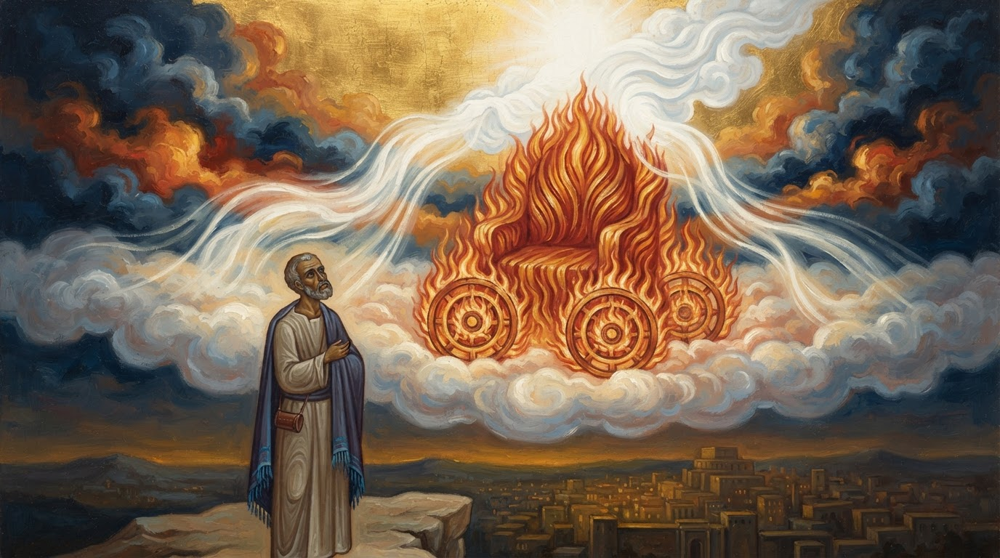
An empty fiery throne is surrounded by clouds and branching light streams. No human-form divine occupant is visible. The image fills the frame as one continuous scene. The cloud rendering is more shaded than the other Icon samples; this diagnostic sample does not establish a style or likeness release decision.
All 12 unaltered originals are shown in their original aspect ratio. Counts describe this small sample, not population failure rates. Both the reference image and its caption were omitted together; their individual effects were not separated. Normal samples ran before omission samples. Across-moment continuity and actual-app accounting/latency were not tested.